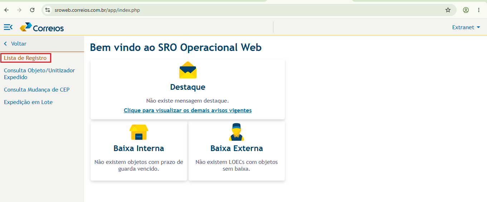
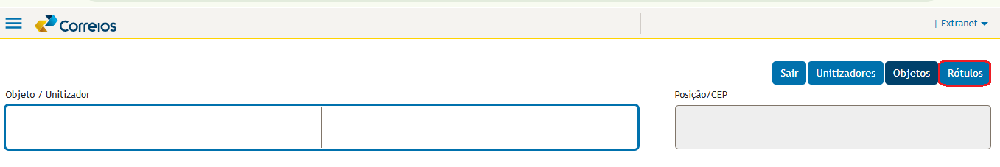
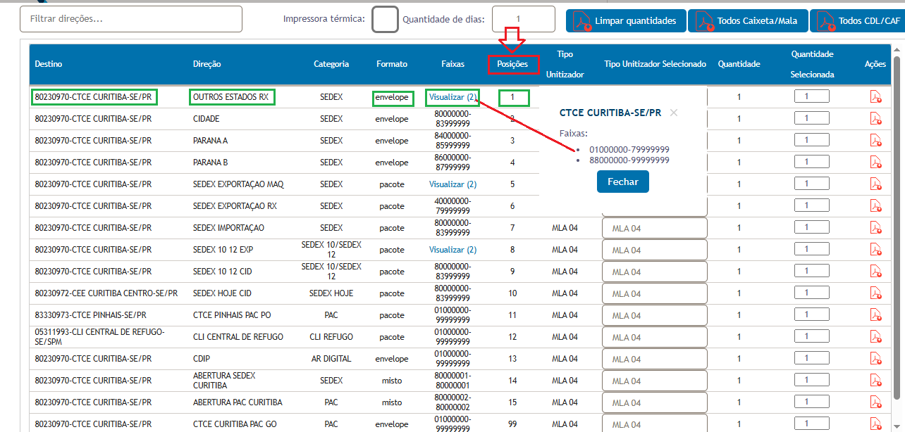
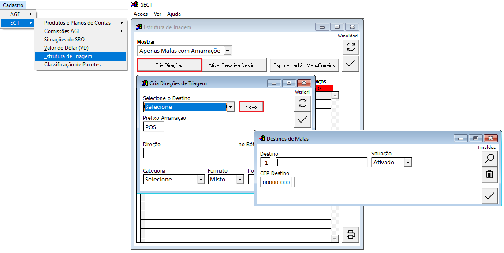
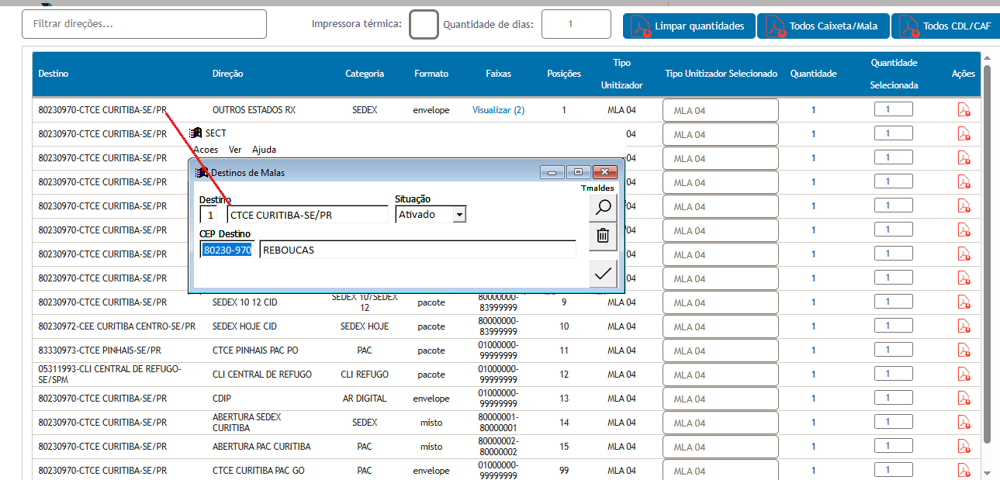
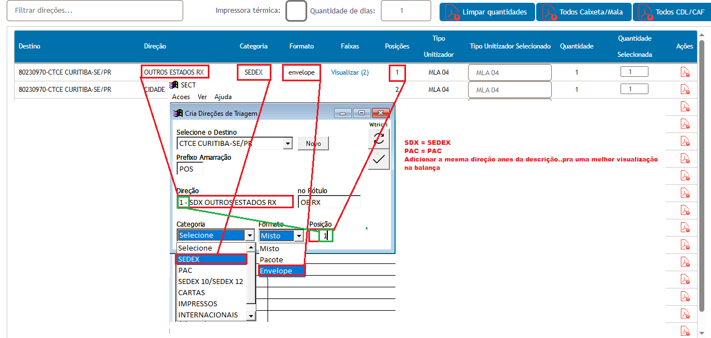
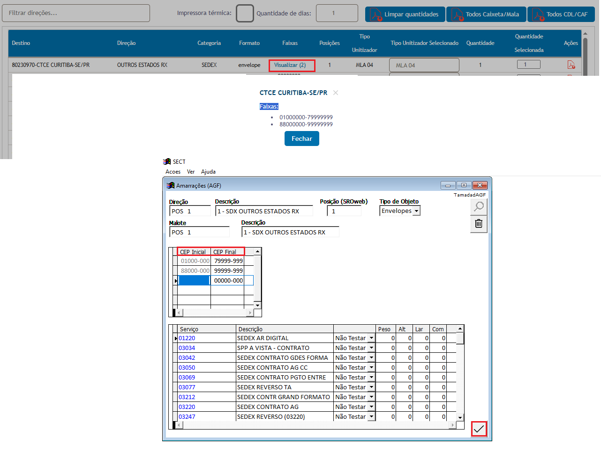
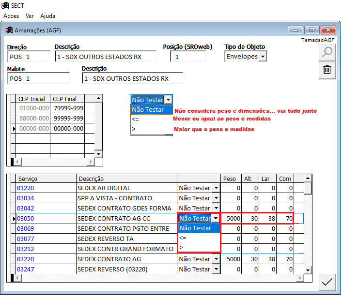
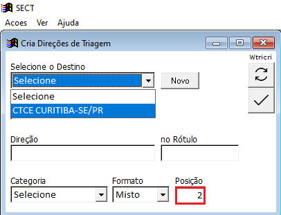

Expedição
Este guia apresenta o cadastro das direções de expedição no SECT com base nas informações exibidas no SROweb e o processo de geração do arquivo para envio.
1. Consultar as direções no SROweb
Antes de cadastrar as direções no SECT, consulte no SROweb os dados utilizados na expedição. O arquivo é gerado de acordo com a direção informada para cada destino.
1.1. Abrir Lista de Registro e Rótulos
- No SROweb, acesse Lista de Registro.
- Em seguida, abra a opção Rótulos.
- Mantenha essa tela disponível para consultar os detalhes de cada direção da expedição.


1.2. Identificar os dados da direção
Na listagem de Rótulos, localize o destino que será cadastrado e confira os dados exibidos, como Direção, Categoria, Formato, Faixas e Posição. Essas informações serão reproduzidas no SECT.

2. Cadastrar as direções no SECT
Com a tela do SROweb aberta, realize no SECT o cadastro da direção seguindo as mesmas informações apresentadas para o destino.
2.1. Criar a direção e o destino
- No SECT, acesse o cadastro de Direções de Triagem.
- Selecione o destino correspondente ou clique em Novo quando precisar criar um destino.
- Cadastre a direção conforme os dados do SROweb.


Preencha também Categoria, Formato e Posição conforme a listagem do SROweb. O exemplo do manual mostra categorias como SEDEX e PAC e formatos como envelope, pacote ou misto.

2.2. Cadastrar as faixas de CEP
Depois de cadastrar a direção, informe no SECT os CEPs que fazem parte dela. Utilize as faixas apresentadas no SROweb como referência para preencher CEP Inicial e CEP Final.

2.3. Configurar peso e medidas, quando aplicável
Caso a agência utilize expedição por peso e medidas, preencha os parâmetros dos serviços conforme o cadastro utilizado pela própria agência/DR.

3. Cadastrar as próximas direções
Depois de confirmar uma direção, o SECT abre o cadastro para a próxima. Continue seguindo a numeração/posição apresentada no SROweb.
- Clique no campo de destino e selecione o cadastro desejado.
- Confira a direção e a posição correspondente.
- Repita o mesmo processo para os demais destinos.
- Para um destino ainda não cadastrado, clique em Novo e faça o cadastro como nas etapas anteriores.

4. Gerar o arquivo de expedição
- No SECT, acesse Expedição → SECT x Expedidos SRO ou utilize ALT+X.
- Na tela aberta, verifique se todos os objetos possuem numeração preenchida na coluna Pos.
- Clique em Arquivo SRO para gerar o arquivo.


5. Processar a expedição no RobôWeb
Com o robô de expedição instalado e configurado, abra o programa e clique em Iniciar Processo. O sistema será direcionado automaticamente ao SROweb e iniciará a leitura dos objetos.